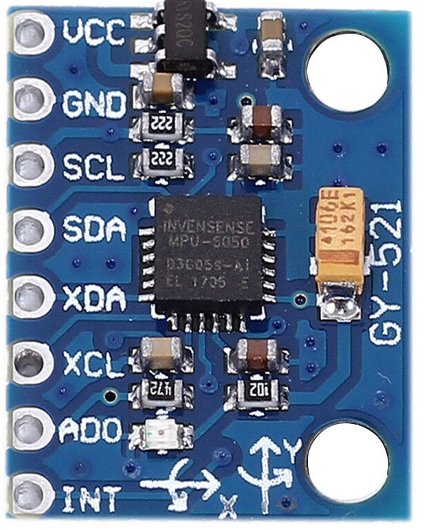
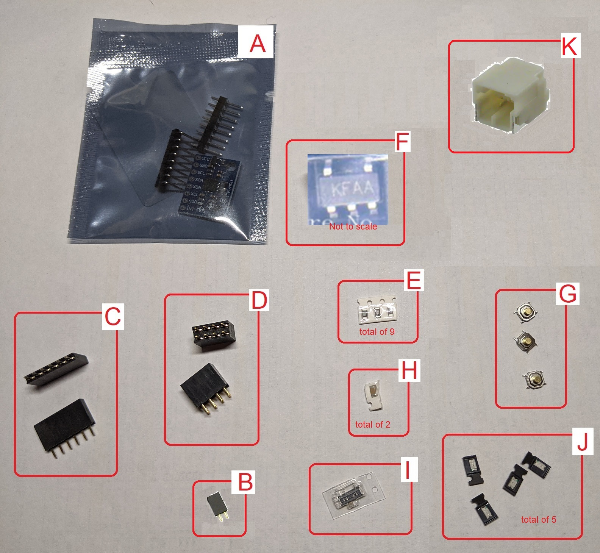
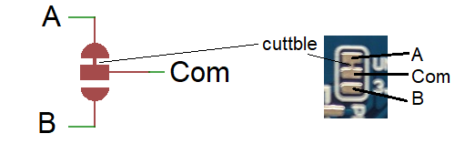
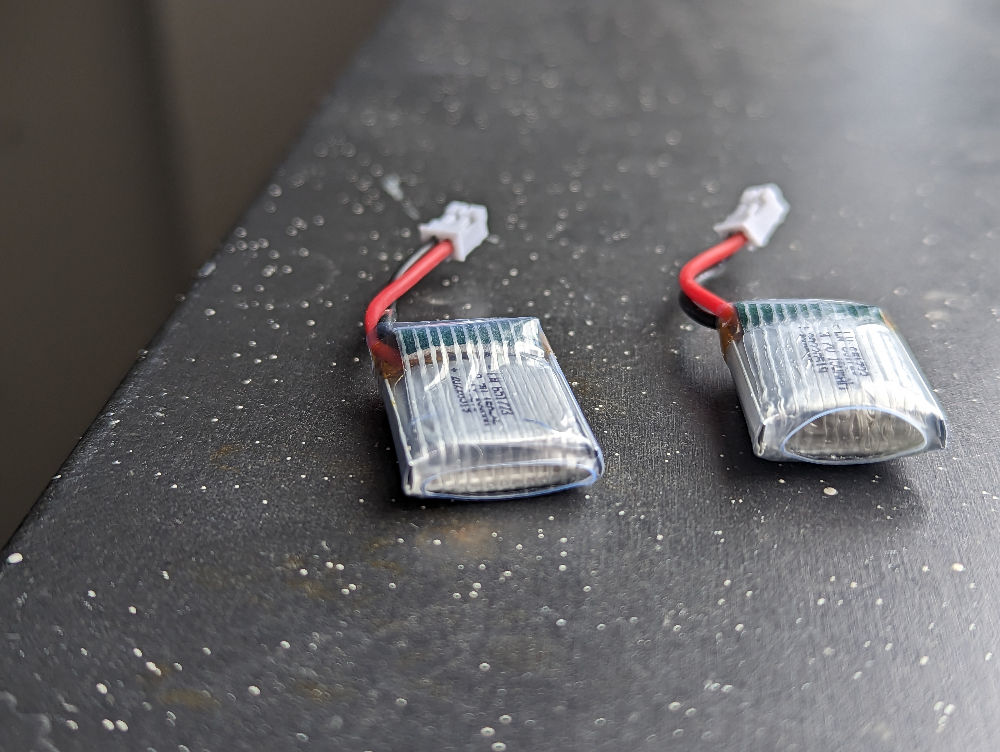
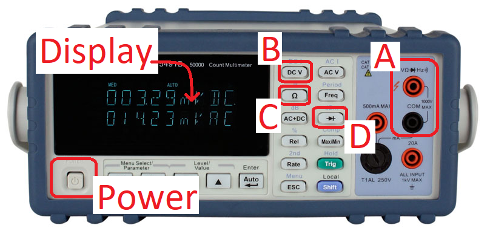
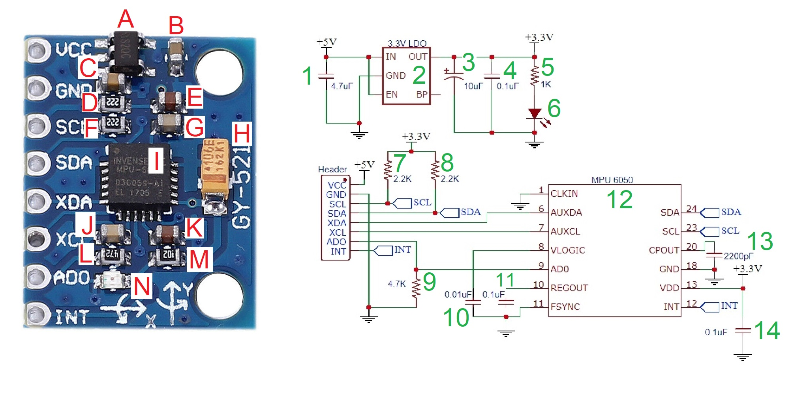

EENG 383
Lab 14 - In-lab activitiesRequirements
Working in teams of up to two, read through the following lab activity and perform all the actions prescribed. You do not need to document bullet items. Make a record of your response to numbered items and turn them in a single copy as your teams solution on Canvas using the instructions posted there. Include the names of both team members at the top of your solutions. Use complete English sentences when answering questions. If the answer to a question is a table or other piece of art (like an oscilloscope trace or a figure), then include a sentence explaining the piece of art. Only include your answers, do not include the question-text unless it is absolutely needed.Objective
Learn about the components that are being installed on the daughter board and how to place the components on the daughter board during assembly.Daughter board Schematic
A daughter board is an printed circuit that connected to a mother board and adds extra features to the mother board. The daughter board that you will assemble through this week's lab will connect to the development board's set of 4 headers surrounding the PIC. The daughter board will have a matching set of female headers that will plug the two together.The daughter board provides the following functions.
- Provide independent power through a 3.7V Lithium Polymer (LiPo) battery.
- Microchips MCP73831 LiPo recharger IC.
- Provide access to the MPU 6050 accelerometer.
- 3 position slide switch for charging, ON and OFF functions.
- 3 buttons.
- 3 LEDs.

The daughter board contains some LEDs and buttons that will come in handy, but you will need to know how they are connected to the PIC.
- Complete the following table.
In the "Pin Name" column, put the PIC pin designation that component connects
to (e.g. something like RA0). In the "Logic Level" column put the logic level
the PIC would have to assert on that LEDs pin to illuminate it, or the logic
level the PIC would read if the button was unpressed. If you are having
problems reading the schematic, read over
this web page.
Component Pin Name Logic Level TOP button BOT button READY LED RECORD LED FINISH LED

- Use the image of the GY-521 and the daughter board schematic to complete
the follow table as follows.
- In the PIC Pin Names column put the PIC pin associated with the corresponding GY-521 signal. To do this, you will need to read the white silk screen on the GY-521 module and relate it to the schematic.
- In the "PIC Pin Function" column write the name of the MSSP function associated with the PIC Pin in that row. To do this, open the PIC18(L)F2X/4XK22 Data Sheet to page 6 and look down the MSSP column to the row associated with the PIC Pin. The answer will be either SCLx or SDAx. Where "x" is the number of the MSSP subsystem (like timers, there is more than 1 MSSP subsystem).
GY-521 signal PIC Pin PIC Pin Function SCL SDA
Daughter board PCB
I converted the schematic for the daughter board into a layout and then had the resulting design fabricated into the printed circuit board shown below.
You are going to solder the parts shown in the following picture to the daughter board as this weeks assignment. A bill of materials, or BOM, is a list of the components that are required to assemble a printed circuit board. I create a BOM for every PCB that I design and the daughter board is no exception. All of the parts in the image below are listed in this BOM. You should keep a copy of the BOM around as it contains, for each part on the daughter board, a link to part and associated images of the parts in case you do not know what a part looks like from it description.

Obviously, it's imperative that you place the parts in the correct place. Let's practice this now by having you identify the part letter (in red font) is associated with the PCB identifiers. You probably will not be able to read the resistor codes in the parts picture. To get the value of the resistors, look at the Qty column in the BOM and compare the quantity of the resistor values to the number of resistors in the white parts tape. You should also feel free to head on over to the assembly instructions for some high resolution pictures of the board being assembled.
- Complete the following table using the instructions provided above.
Daughter Board identifier Part picture letter R1-R9 C1,C3 H Finish Record Ready POWER CHG GY-521 MCP73831 XC6206 Unused C4…C3 B7…MCLR C0/A6…A2/A3 GND/C7…B3/B4 USB TOP BOTTOM RESET JST PWR_CTRL
Solder Jumpers
You will notice the presence of solder jumpers in the schematic. These symbols are shown at left in the picture below. Solder jumpers are included when you may want to alter the connection between two nets in the circuit after the circuit board has been manufactured.
In the image above, the net A is connected to the net Com by default. If you wanted to connect net B to Com, you would take a razor blade to the thin copper trace that joins A and Com (shown at right) and seperate these two nets. You would then apply a blob of solder between the Com and B pads of the circuit board, creating a conductive path between these two nets. Note that "Com" stands for common as in that net is in common with either A or B.
I included the JP6 solder jumper in case we needed to add a voltage regulator to reduce the 3.7V output of the Lithium Polymer (LiPo) down to 3.3V. It turns out that the development board runs just fine on 3.7V and, more importantly, the 3.3V regulator that supplies the SD-card's power needs the 3.7V input to produce proper operation of the SD card.
During the develolment of the daughter board, I learned that there is no consistent standard in the polarity orientation of the LiPo batteries. I learned this after killing my development board with reverse voltage :/ So I included a way to switch the polarity of a LiPo battery using the pair of BATfix solder jumpers.
tl;dr Do not modify any of the solder jumpers for this lab.
Lithium Ion Polymer (LiPo) Rechargable Batterys
LiPo batteries are ubiquitious in electronic devices due to their high charge to weight/volume density. This very quality can lead to problems if the physical case of the battery is ruptured. Puncturing the thin metal foil case of the battery may lead to spontanous combustion of the lithium resulting in a very hot fire which will lead to severe burns if you are unfortunatly in physical contact with the battery. As a result, I need you to take care when handling these batteries to protect them from sharp object or forceful impacts. If the metal foil around your LiPo appears to be puffy or overly bloated, move the batttery to a safe place (outdoors on a concrete surface) and give the battery some time alone to decide what it wants to do. Then please alert me.The battery on the right has experienced a failure. You can tell this by comparing it aginst another LiPo battery and...
- Noticing that the failed LiPo ius bloated.
- Noticing that the outer clear casing is noticablly eliptical on the end.
- Noticing that the outer wrapping can be compressed by a soft object when pressed. A good battery is very ridge when squeezed.
 |
 |
 |
The batteries that you are using for the daughter board are rated at 3.7V and 150mAh. Since these are no-name batteries, let's look at the technical documents for the Honcell HCP621919 battery which has a lot of common characteristics to the batteries that you will use.
C-Rating Our batteries are rated at 150mAh which describes the product of the discharge duration in hours times and the discharge rate in milliamps. So our batteries can supply 50mA for 3 hours, 30mA for 5 hours, or 150mA for 1 hour. Instead of describing the discharge rate in milliamps, battery vendors use C-rate, which is the discharge rate in milliamps divided by the capacity of the battery. So for example, if you discharged our battery at 50mA, you would be discharging it at 0.3C = 50mA/150mA. And yes, you ignore the "hours" in mAh when performing this calculation.
Voltage performance When you are using the daughter board to power the development board in the data logging experiments in the next sectons, you will be placing a fairly light load on the battery, probablly around 30mA. Use this information and the information in the Honcell technical document to answer the following questions.
- What is discharge C-rating when using the battery for data logging?
- Find the Discharge Characteristics (Rate) graph in section 13 of the Honcell document. Using the discharge rate from the previous problem, at what voltage does the LiPo battery start to sharply drop off? Look for the "corner" in the voltage curve and estimate the voltage at which that voltage occurs.
- What charge current is used during the constant curent phase of battery charging?
- How long does the constant current phase last?
- What voltage is used during the constant voltage phase of battery charging?
- How long does the constant voltage phase last?
MCP73831 Single Cell LiPo Recharger IC
Start by download the PDF technical documents for the MCP73831 from the Microchips web site. Next, identify the package marking on the SOT-23-5 case of the MCP73831. You can right click on the image below and select "Open in New Tab" to see these markings.
Use this information to answer the following questions.
- Use the information in the PACKAGE INFORMATION section of the technical docment to locate the device marking Code found on our chip. Write down the full Device identifier.
- Use the information in the PRODUCT IDENTIFICATION SYSTEM section
of the technical documents to decode the device identifier.
Field Value Meaning Device MCP73831T Regulation Voltage Options Leave blank Temp Range Package SOT-23-5
- What is the value of the resistor connected to the PROG pin?
- What logic level on the STAT pin would illuminate the green CHG LED? Use the terms "High" or "Low" as an answer to this question.
- Look at the FAST CHARGE MODE (constant current phase of battery charging) block in Figure 4-1. What variable name is given to the charge current used during this phase? What is the logic level of the STAT pin during this phase?
- Look at the CONSTANT VOLTAGE MODE (constant voltage phase of battery charging) block in Figure 4-1. What variable name is given to the voltage used during this phase? What is the logic level of the STAT pin during this phase?
- What is the logic level of the STAT pin in the CHARGE COMPLETE MODE?
- Use the information in section 5.1.2 of the technical documents to determine the magnitude of IREG. What is the C-rate we will be charging the 150mAh battery during the constant current phase?
Polarized Components
Polarized components are devices that have a positive terminal and a negative terminal. If a polarized component is physically symmetrical about the axis on which it is soldered, then there is a 50/50 chance that it would be soldered in backwards without some indication which terminal is positive and which is negative.The daughter board has 2 green LEDs, 1 red and 1 yellow LEDs. These LEDs are shown in the image below.

You will put these LEDs in the following positions on the daughter board. You may want to note this so that you have this information when assembling the daughter board.
| Silk Screen Label | Color |
| POWER | Green |
| READY | Yellow |
| RECORD | Green |
| FINISH | Red |
The diode checking mode of a DMM pushes about 1mA of current through the diode and then measures and reports the voltage drop across the diode. Since an LED is a diode that illuminates when current is pushed through it, the diode checking mode of a DMM will illuminate an LED. This is a super handy trick to check the polarity of LEDs. Since the DMM pushes current out the red diode terminal, just attach that lead to each of the terminals of the LED (with the COM lead on the other LED terminal) and when the LED lights up the red lead is attached to the LED anode (positive terminal).

- Plug a red test cable into the red jack labeled "VΩHz" in the region labeled "A". Plug a black test cable into the black jack labeled "COM" in the region labeled "A",
- Press the diode button (labeled "D"),
- Press the red probe onto one of the LED terminals. Press the black probe to the other LED terminal. The "u" shaped indentations make this reasonably easy.
- When the red probe is on the LED anode, then the LED should illuminate and the forward voltage of the LED will be displayed.
-
Record the forward voltage drop for the LEDs in the table below. Make a mental note of
which LED terminal (anode or cathode) is marked in green. Note, this marking convention
is consistent across every SMT LED that I have come across.
LED color Forward voltage drop Red Yellow Green
GY-521 development
You will be connecting the low-cost GY-521 module to your daughter board. The GY-521 is manufactured by a wide variety of vendors each trying to out-price the other. As a result you will find significant variation in the quality of components used on the board (with the exclusion of the accelerometer). This means that the components on different GY-521 boards may look different.Let's start our exploration of this handy little board by closely examining the components on the board and how they are interconnected. The following image shows the board with each component marked by a red letter. The schematic for the GY-521 is shown with each component marked by a green number.

In the following table, relate each component on the GY-521 board with its corresponding element in the schematic.
- SMT resistors are black and have 3 numbers printed on them. These numbers specify their resistance (in ohms) using a standard code you learned about in lab 1. Hint, open inLab01 if you forgot how the digits in this code correspond to the resistance value.
- Ceramic Chip Capacitors are tan to chocolate brown in color and have capacitance ranging from picofarads to about 10 microfarads. Generally larger ceramic chip capacitors have larger capacitance due to the nature of their construction (see the link above). You will not be able to tell the capacitance from the color of the device. To identify a ceramic capacitor on the GY-521 board, you will need to look at the components that the capacitor is connected by looking closely at the traces leading away from the capacitor.
- Tantalum capacitors are more bulky than their ceramic counter parts and have markings on their top which helps identify their value. Unlike ceramic chip capacitors, tantalum capacitors are polarized, meaning they have a + terminal and a - terminal. Be forewarned, tantalum capacitors have a bad habit of catching on fire when installed backwards.
- There are 2 ICs on the GY-521. The smaller 5-pin device is the LDO voltage regulator. The larger, square IC is the MPU 6050. The MPU 6050 has a laser engraved white dot in its upper left corner. The pin immediately to the left and slightly below the dot is pin 1. pins are consecutively numbered, counting down the left side of the chip to pin 6 which is just to the right of the silked screened "A" in "XDA". Keep counting around the IC to get the remaining pin number. If you are unsure, check out this MPU 6050 pinout for more information.
- Look at the electrical traces on the PCB. The wires are standout as lighter blue regions of the PCB.
- The unused copper in the top PCB layer is 3.3V
- You are welcome to use the benchtop digital multimeters to check continuity between pins on your GY-521 to help resolve any questions you might have.
{kind=link}
- Identify the schematic symbol and value for each component on the GY-521 board.
GY-521 Schematic Value A
LP2985 B
C
D
E
F
G
H
I
12
MPU 6050 J
K
L
M
N